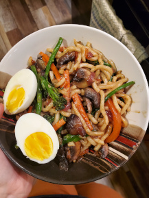

Udon Noodles

Description
This udon noodle recipe is great for busy week
night dinners! With simple ingredients and minimal
mess this will be a regular go-to. Not to
mention, it's super tasty!
Ingredients
- 1 sliced red pepper
- 1 chopped onion
- 1 cup broccolini
- 1 lb chopped mushrooms
- 2 large chopped carrots
- 1 package udon noodles
- 2 tbsp soy sauce or liquid aminos
- 1 tbsp toasted sesame oil
- 2-3 tbsp hoisin sauce
- 2 tbsp olive oil (or any neutral cooking oil)
- Optional 2 soft boiled eggs and/or up to 1 cup edamame
Directions
-
Heat the olive oil in a large non-stick pan or
wok. Add the peppers, onions, mushrooms, and
carrots. Cook on medium to medium-high heat,
stirring occasionally, for 8-10 minutes (or
until mushrooms are nearly cooked through).
-
Add the broccolini and cook for another 2-3
minutes. If using edamame, add that now as well.
-
Add soy sauce, sesame oil, and hoisin. Stir until
well combined.
-
Add noodles to pan and cook for another 3-4 minutes
or until noodles separate and soften. Stir almost
continuously to evenly coat noodles in sauce. Adjust
sauce to taste.
-
Remove from heat and serve. Top with
soft boiled egg.
Feel free to make any desired substitutions
with vegetable or proteins!
*To soft boil an egg, add it to boiling water for 6-8 minutes.